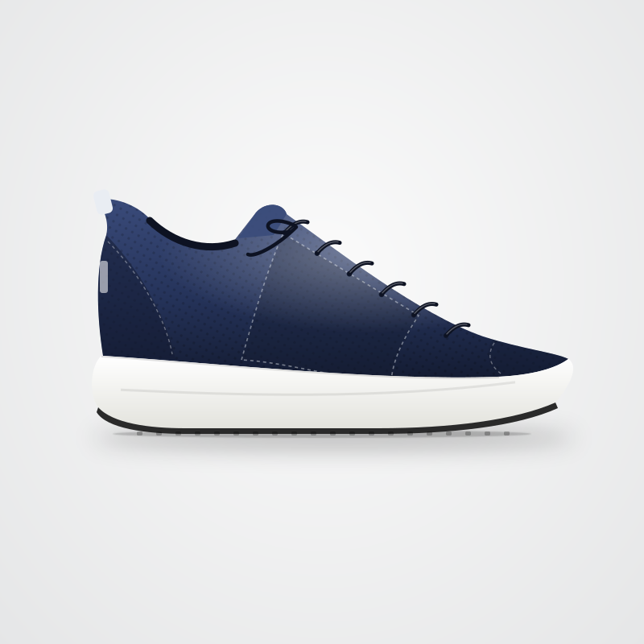
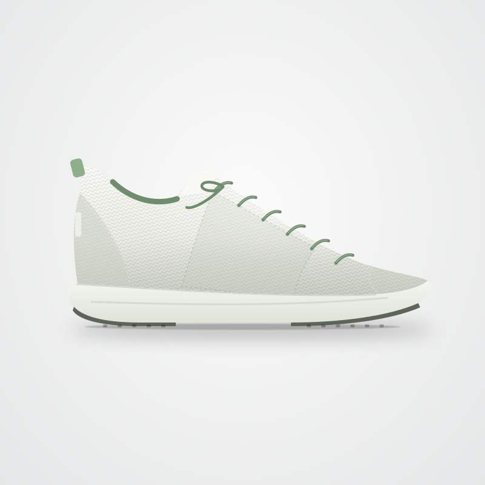
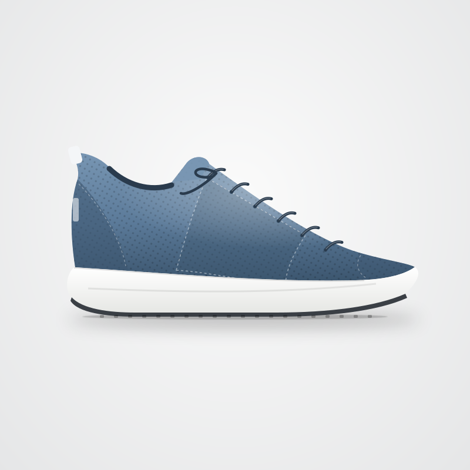

Imagine that you are shopping for running shoes for regular road running and everyday training. Your priorities for this purchase are listed to the right.Your priorities for this purchase are listed below. Based on these priorities, review the product options and choose the one you'd select.
Shopping Priorities
All three are equally important
CushioningImportant
LightweightImportant
DurabilityImportant
Budget: $100 or less
AVAILABLE PRODUCTS
Compare three options

RUNNING SHOES
Aviren
$95
About this item
Everyday road running: Neutral running shoe designed for daily training, long runs, and everyday wear.
Durable outsole: Full-coverage rubber outsole built to hold up to high weekly mileage.
Shoe weight: Each shoe weighs 285 g (10.1 oz), men's US 9.
Secure fit: Padded heel collar and gusseted tongue to reduce slipping.
Available colors: Black, Graphite, and Navy.
Customer reviews
★ 4.5 out of 5
★★★★★
My legs feel fresh after long runs
Maya R. · Verified Purchase
I did a 10-mile run on pavement and my knees and calves felt much better than in my old pair. The cushioning really takes the edge off hard roads.
★★★★★
Holding up really well
Chris T. · Verified Purchase
I've been running in these almost every day for a few months and the outsole barely shows wear. Comfortable right out of the box.
★★★★☆
Very comfortable, a bit heavy
Jordan K. · Verified Purchase
Great on long runs and hard surfaces. They feel a little heavy when I try to pick up the pace for faster workouts.
★★★★☆
Good everyday trainer
Nina P. · Verified Purchase
Fit was true to size and the heel feels secure. I wear them for runs and for long days on my feet.

RUNNING SHOES
Brevik
$85
About this item
Lightweight running shoe: Streamlined neutral shoe designed for everyday runs, faster workouts, and casual wear.
Outsole: Rubber pods at the heel and toe, with exposed foam through the midfoot to save weight.
Shoe weight: Each shoe weighs 235 g (8.3 oz), men's US 9.
Breathable upper: Lightweight knit upper with a sock-like fit.
Available colors: White, Black, and Sage.
Customer reviews
★ 4.6 out of 5
★★★★★
Light and quick
Alex M. · Verified Purchase
These are some of the lightest running shoes I have owned. They feel great for shorter runs and tempo days.
★★★★☆
Good for short runs
Sam D. · Verified Purchase
Fine for my usual 3-mile loop. On longer runs on concrete, my legs feel more beat up than I expected.
★★★★☆
Comfortable, wearing fast
Taylor B. · Verified Purchase
I love the sock-like fit, but the exposed foam under the midfoot is already scuffed after a couple of months.
★★★★★
Great for everyday wear
Renee L. · Verified Purchase
Light, breathable, and they look good. I wear them for runs and around town.

RUNNING SHOES
Calyra
$99
About this item
Versatile running shoe: Neutral running shoe designed for road running, gym workouts, and general everyday use.
Outsole: Rubber placed on the main high-wear zones of the heel and forefoot.
Shoe weight: Each shoe weighs 260 g (9.2 oz), men's US 9.
Supportive fit: Engineered mesh upper with a structured heel counter.
Available colors: White, Slate Blue, and Black.
Customer reviews
★ 4.5 out of 5
★★★★★
Good all-rounder
Daniel S. · Verified Purchase
Comfortable on my regular road runs. On my longest runs my legs felt it a bit, but overall a solid shoe.
★★★★☆
Stable, slightly heavier
Priya N. · Verified Purchase
The heel feels very stable. They are a bit heavier than my old pair, but more comfortable.
★★★★★
Works for gym and road
Morgan E. · Verified Purchase
I use them for treadmill runs and weight training. The cushioning feels balanced, not too soft or too firm.
★★★★☆
Decent durability
Jamie W. · Verified Purchase
The outsole is wearing evenly so far. Not the lightest shoe, but fine for daily miles.
SHOPPING ASSISTANCE
Specification Explainer
Generated by AI
⚙
How the explanation was createdThe AI examined each product’s technical specifications and translated selected technical values into practical descriptions of what they may mean in everyday use.
AvirenCushioning — 37 mm heel stack: Firm, moderate cushioning with a closer-to-the-ground feel; legs may feel more impact on long runs or hard pavement. Heel-to-toe drop — 10 mm: Higher drop; suits runners who tend to land on their heel.
BrevikCushioning — 29 mm heel stack: High cushioning that absorbs impact well, keeping legs comfortable on long runs and hard pavement. Heel-to-toe drop — 6 mm: Lower drop; encourages a midfoot landing.
CalyraCushioning — 33 mm heel stack: Balanced cushioning suited to everyday runs and typical road surfaces. Heel-to-toe drop — 8 mm: Moderate drop; suits most running styles.
ADDITIONAL PRODUCT INFORMATION
Technical specifications
Detailed technical specifications are available for all three products, including stack height, heel-to-toe drop, weight, midsole, outsole, and upper material.
Review as much or as little of this information as you would like. You can use these specifications together with the shopping priorities above and the Specification Explainer when comparing the three options.
Specification
Aviren
Brevik
Calyra
Heel stack height
37 mm
29 mm
33 mm
Forefoot stack height
27 mm
23 mm
25 mm
Heel-to-toe drop
10 mm
6 mm
8 mm
Weight (men's US 9)
285 g
235 g
260 g
Midsole
Soft EVA-blend foam
Firm EVA foam
EVA foam
Outsole
Full-coverage rubber
Rubber pods (heel/toe)
Rubber on high-wear zones
Upper
Engineered mesh
Knit
Engineered mesh
About cushioning (stack height): Stack height is the thickness of the sole between your foot and the ground, measured in millimeters at the heel. Higher numbers mean more cushioning; most everyday running shoes fall between about 25 mm (firm, close to the ground) and 40 mm (highly cushioned). In general, higher-stack shoes absorb more impact on long runs and hard pavement, while lower-stack shoes feel firmer, with more of the ground's impact reaching your legs.